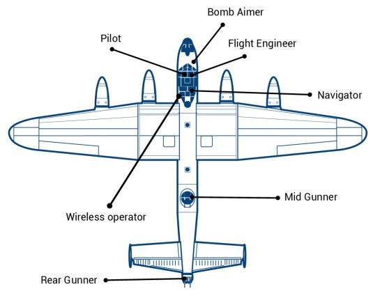

Aviation History
Featuring: AVRO LANCASTER
Aircraft Profile
Evolution
The evolution of the Avro Lancaster was triggered by the operational and mechanical shortcomings of its predecessor, the Manchester, combined with the urgent wartime necessity for a reliable and capable heavy bomber. The Lancaster quickly proved its worth and became one of the most iconic bombers of World War II.
- Engine Issues with the Manchester: The Avro Manchester was powered by the Rolls-Royce Vulture engines, which proved to be unreliable in service. These engines suffered from mechanical problems, leading to numerous in-flight failures.
- Operational Performance of the Manchester: Beyond the engine problems, the Manchester was limited in terms of its payload capacity and range, making it less effective than what was required for the strategic bombing campaigns against Germany during World War II.
- Urgency of the War Effort: With the war raging and the need for an effective heavy bomber evident, the British sought a rapid solution. Considering the basic airframe of the Manchester was sound, Avro decided to adapt and improve upon it rather than starting a design from scratch.
- Design Adaptation: Avro's chief designer, Roy Chadwick, led the modifications. The most significant change was replacing the twin Vulture engines with four more reliable Rolls-Royce Merlin engines. This not only increased the bomber's reliability but also its range, speed, and payload capacity. The wingspan was increased, and modifications were made to the fuselage to accommodate the larger bomb bay.
- Successful Trials: The prototype Lancaster, initially called the Manchester Mark III, showed promising results during its trials, far outperforming the original Manchester.
- Operational Need: As the need for strategic bombing of German industry and infrastructure increased, the Lancaster's ability to carry a significant bomb load, including the 22,000-lb "Grand Slam" bomb, made it a crucial asset. Its versatility meant it was used in various significant raids, such as the famous "Dambusters" raid by 617 Squadron.
- Production and Refinement: Recognizing its potential, production of the Lancaster was quickly ramped up. Throughout its service, various versions of the Lancaster were developed with modifications to improve its performance, defenses, and other operational parameters.
Specification
| Name: | Avro Lancaster |
|---|---|
| Type: | Heavy Bomber |
| Manufacturer: | A.V. Roe & Co. Ltd. (Avro) |
| Introduction: | 1942 |
| Retirement: | 1963 (from active military service) |
| Wingspan: | 102 feet (31 meters) |
| Length: | 69 feet 6 inches (21.18 meters) |
| Height: | 20 feet 6 inches (6.25 meters) |
| Maximum Speed: | Approximately 275 mph (443 km/h) |
| Range: | Approximately 2,530 miles (4,070 km) |
| Crew: | Typically 7 (pilot, flight engineer, navigator, bomb aimer, wireless operator, and two gunners) |
| Armament: | The Lancaster was equipped with various defensive armaments, including turret-mounted machine guns. It could carry a significant bomb load, including various types of bombs such as general-purpose bombs, incendiary bombs, and the "Tallboy" and "Grand Slam" earthquake bombs. |
Notable Features
-
Bouncing Bombs:
The Lancaster gained fame for its involvement in the Dam Busters raid, where it carried Barnes Wallis-designed bouncing bombs to target German dams. This innovative tactic was aimed at disrupting industrial infrastructure.
-
Operational Versatility:
The Lancaster was used in a wide range of roles, including strategic bombing, precision bombing, night bombing, maritime patrol, and more.
-
Long Range:
The aircraft's extended range allowed it to carry out missions deep into enemy territory.
-
Durability:
The Lancaster was known for its robust construction, which contributed to its ability to withstand combat damage and continue flying.

Source: RAF Museum - Lancaster Challenge
Bibliography
- Holmes, T. (2005). Avro Lancaster. Oxford, UK: Osprey Publishing.
- McKinstry, L. (2009). Lancaster: The Second World War's Greatest Bomber. London, UK: John Murray.
- Mason, F. K. (1994). The British Bomber since 1914. London, UK: Putnam Aeronautical Books.
- Garbett, M., & Goulding, B. (1984). The Lancaster Manual. London, UK: HMSO.
- Chant, C. (2000). Aircraft of World War II. New York, NY: Dempsey-Parr.
- Sweetman, J. (2002). The Dambusters Raid. Cassell Military Paperbacks.
- Morpurgo, J.E. (1972). Barnes Wallis: A Biography. London, UK: Longman.
- Middlebrook, M., & Everitt, C. (1985). The Bomber Command War Diaries: An Operational Reference Book. Viking.
- Royal Air Force Museum. "Avro Lancaster I." RAF Museum Website.
- World War II Database. "Avro Lancaster." WW2DB Website.